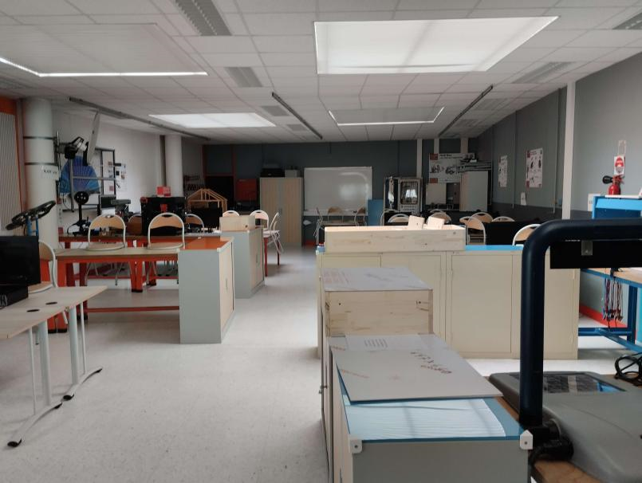
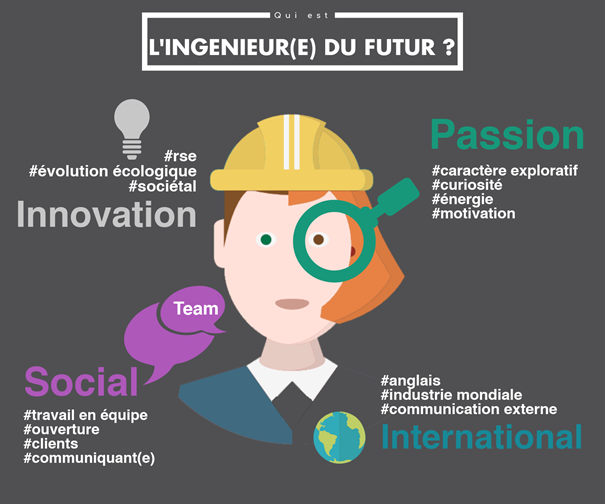

Avis d'un ancien élève sur l'option SI
Notre intervenant aimait énormément la matière Science de l'ingénieur car on pouvait y trouvé des exemples concret ainsi que des cours clairs et cela lui est très utile pour sa PREPA à L'INSA Lyon. En général il recommande cette option pour ceux qui se dirigent vers un métier d'ingénieur ou quelque chose qui se rapproche du domaine de la mécanique ou de l'électronique.

Présentation de l'université
Insa Lyon est un nom connu à l'international afin d'y rentrer il faut posséder une excellente moyenne au lycée et de très bonne appréciation seulement cela ne suffit il faut faire aussi une lettre de motivation et passer un entretien avec des recruteurs.
L'université possède de très nombreux cursus disponibles principalement pour des formations d'ingénieurs ainsi que des PREPA et les professeurs sont tous des chercheurs (BAC+8), de ce fait ils possèdent un personnel compétent.
De plus INSA lyon possède des contacts a l'international ce qui permet à ses élèves de faire quelques mois à l'étranger en partenariat avec les écoles demandées.
-
Pour plus d'informations : Le site de l'université

Les cours EN PREPA
En PREPA cela est connu et ce n'est pas un mythe on demande une grande charge et beaucoup de travail personnel avec des cours qui vont vite et qui sont difficiles à comprendrent. De ce fait chaque semaine les élèves ont :
Des cours magistraux en amphitheâtre (6h par semaine);
Des travaux dirigé 20-30 personne (6h par semaine );
Des travaux Pratique (6h par semaine);
Des contrôles sont prévus un jour fixe de la semaine ainsi qu'un oral se fait aussi chaque semaine sur un sujet différent à chaque fois.
Quels sont les possibilités après L'INSA ?
Après l'INSA tout les étudiant diplômés finissent par très rapidement trouvé du travail et ce même a l'international dans de grande entreprise à un poste assez haut dans la hiérarchie et cela grâce à la réputation de l'université. Mais généralement les élèves sortant de INSA Lyon finissent avec une formation d'ingénieur pour la plus part.
